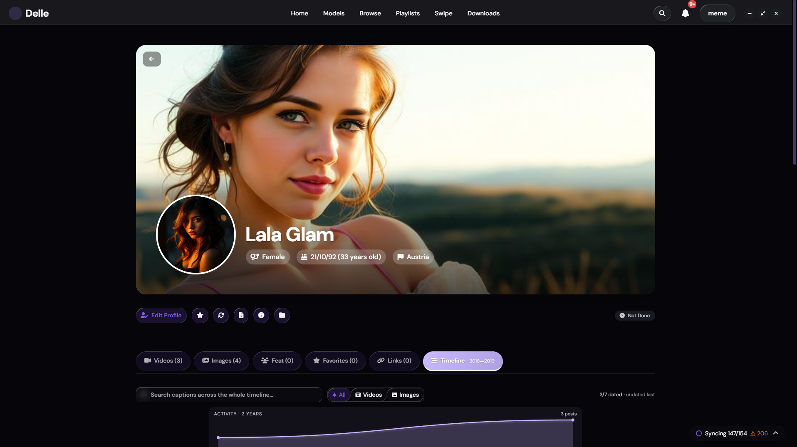

Delle Model organizes your media per creator, by post date. Browse a chronological timeline, dedup automatically by hash, recover post dates and tags from gallery-dl & yt-dlp metadata. 100% local. No cloud.

Four steps from install to a fully organized archive.
Tell Delle Model where your media lives. Subfolders become creators automatically. No naming convention required.
Hash-based indexing finds doubles, fingerprints media, and builds a portable SQLite database — all on your disk.
Recover post dates, descriptions, and tags from gallery-dl + yt-dlp sidecars — even for files downloaded months ago.
Per-creator chronology with an interactive activity histogram. Click a year, drill to month, find anything in seconds.
Built around the way creator content actually lives on disk.
Browse a creator's posts chronologically. Year-by-year area chart with drill-down to monthly. Click a bar, filter the feed. No competitor has this.
Re-queries the original sources via gallery-dl + yt-dlp to recover post dates, descriptions, tags retroactively. Works even months after download.
Automatic exact (SHA-256) + perceptual (dHash) hashing on sync. Finds doubles across re-downloads, quality variants, and reposts.
SQLite on your disk. No cloud, no telemetry, no account required to use. Optional LAN access from devices on your home network.
One-click JSON export of your entire library. Drop on another machine, restore in seconds. Move between Windows / macOS / Linux freely.
gallery-dl, yt-dlp, manual imports — all show up in one library. Source URL preserved per item, one click back to the original post.
A self-contained desktop app. No cloud, no account dependencies for the core work.
Each creator gets a profile, a folder, and a timeline. Subfolders auto-detect on sync. Tags, favorites, links, notes — all scoped to the right entity.
Your library lives in a single SQLite file. Export to JSON, restore on any machine. Move across Windows / macOS / Linux without losing a single tag.
Clean up aggressively. Items move to the recycle bin first, restore in one click. Permanent delete only when you decide.
Multi-select across pages, mass-tag, mass-move, mass-recycle. Touch hundreds of items in seconds instead of one by one.
Browse your library from your phone or tablet on the same network. Same UI, no extra install. Off by default — turn on when you want it.
Windows, macOS, Linux.
Closed beta — support and bug reports happen in the Discord. General questions in the FAQ.